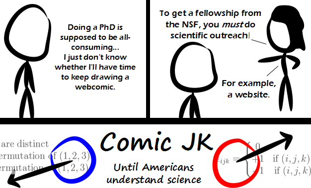

Comic JK 760
When I Feel Like It
⇤
<
?
>
⇥

⇤
<
?
>
⇥
Forum
.
RSS
.
Digg
.
Facebook
.
Reddit
.
Twitter
.
Stumbleupon
Enter your thoughts on number 760 here. Please, no spamming, trolling, phreaking, or understanding the science of webcomics. Congratulations. +1 Is the web comic artist __actually__ a PhD student? That explains a lot about the state of the American school system.... (and economy). >that was rather mean don't you think... ? and rather uncalled-for, as well... ( and no, I'm not the artist... ) >it was clearly a compliment - it shows that the school system has excellently educated the artist, and that the economy is suffering because the artist is still in school instead of working >>Hey, now don't say you can't tell a web comics artist's personality solely based on his comics or just the fact that he is a comic artist? I mean, it's not as if that would be highly biased and full of prejudice, now would it? >>>NOTHING is uncalled-for when one makes a free-for-all comment box of this nature. >>>>except common courtesy and good manners... ? >>>>>no not even that... you bastard >>>>>You're not of the Internet generation, are you? Why are the equations Male? >Sexism, as usual. >>and haven't you heard, prime numbers are male too! don't believe me, google it! >>One of them has turned blue and started drooping... Why is the 'science' maths? > All real sciences are, at their root, mathematical. >> If by mathematical, you mean count things good. >>>science is logical, not necessarily mathematical, some math can contain logical fallacies. >>><feynman>The key to science is EXPERIMENT.</feynman> My dick - until your mother understands, well, pretty much anything.